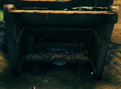
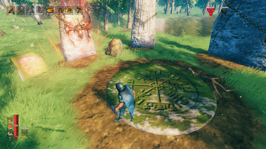
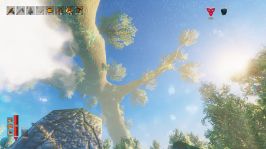
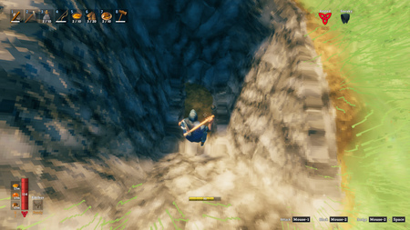
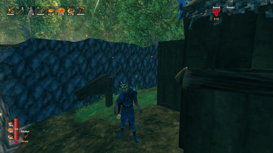
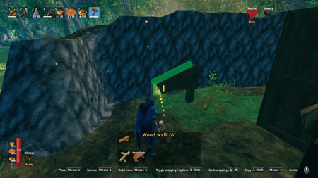
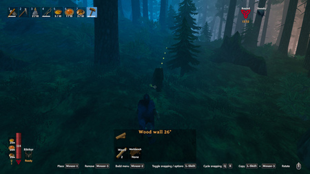
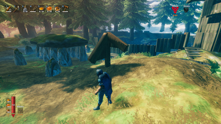

入门玩法
本站支持中英文站内搜索。带 ↗ 的链接指向外部网站；各页来源版本见页脚。
控制
默认操作参见控制。
如何制作武器？
如何建造？
- 更多详情请参阅： 建材
建造需要使用工具锤，可在背包界面用木材和石头制作。除少数例外，建造时必须位于工作台的工作范围内；后期则需要对应的其他制作设施。默认按鼠标右键[RMB]打开工具锤的建造菜单。
如何制作物品？
- 更多详情请参阅： 制作


除了少数可在背包中制作的基础物品，大多数物品都需要制作设施；这些设施可以用工具锤建造。最先使用的是工作台，它允许你在周围一定范围内建造，但要制作物品，工作台本身必须有遮蔽。可以快速搭建一个修理小棚：先把工作台放在平地上，在后方放两面墙，左右各放一面墙，再用两块26°屋顶盖住。遮蔽满足要求后，对准工作台并按提示按下[E]，即可打开制作菜单。
如何睡觉？
建简易小屋或庇护所，放营火，再在内放床铺。室内篝火需通风，通常在正上方开洞。雨会熄火，需在上方加屋顶或石头，距火一米或10米均可，只需正对。室外即使有顶，雨中强风也可能熄火，需围墙才能重燃。热量能穿过木墙及石墙。
如何解锁配方？
- 更多详情请参阅： 分类：物品
发现配方所需的全部材料类型后，就会解锁该配方。但解锁并不代表材料数量已经足够，你可能仍需收集某些材料才能立即制作。
该吃什么？
- 更多详情请参阅： 食物
食用采集或制作的食物可提高生命、耐力上限，并持续恢复生命。前期最佳治疗来源为蜂蜜。
如何猎鹿？
如何驯服鬓猪？
- 更多详情请参阅： 驯服鬓猪
挖一个坑或建造围栏，把两只鬓猪引进去并困住，然后持续喂食，直到它们被驯服。
如何回家？
- 更多详情请参阅： 传送门
认领一张床即可将它设为新的重生点。目前没有无需死亡就能直接返回重生点的召回功能。
死亡后该做什么？
- 更多详情请参阅： 死亡
死亡后，随身物品会留在墓碑中，你可以返回墓碑取回。将准星对准墓碑，按[E]打开储物界面。取走全部物品后，你会获得跑尸形态增益，在短时间内更难被击杀，便于重新穿戴装备。
如何避免在雪山冻伤？
需建带热源的庇护，前期唯一选择为营火。坦白说，除非无法避免，前期不应上雪山。
后期可以制作并使用抗霜蜜酒，或穿戴提供冰霜抗性的护甲，以消除这一负面效果。
如何点燃烟花？
将1个烟花放入营火发射烟花，升空后朋友或敌人能看见位置。步骤：背包选烟花，放快捷栏[1-8]，对准营火按对应快捷键。
如何正确探矿？
勘探是无需愿望骨寻找隐藏物体的进阶方法；愿望骨找不到的物体，也可用鹿角战锤查找。鹿角战锤砸地会以伤害数字或“太硬了”显示有生命的物体，可找到地下或遮挡物。主要用途为击杀古树长老取得沼泽密钥前获取大量铁，或击杀邪骨恶灵取得愿望骨前找银。
寻找铁矿
勘探铁是主要用途，但沼泽杂物多，较难。先用鹿角战锤砸地，只找0伤害数字，忽略其他。若地下出现不来自岩石或小冷杉的0，或零的数量比树石应有数量多，就找到了泥泞的废料堆节点。用镐向下及周围挖，采出废铁，冶炼为珍贵铁。
寻找银矿
勘探银与铁类似，但凛冽雪山杂物少，容易得多。特别注意狼及石魔，前者可连续控制准备不足者，后者难杀。四处移动，定期用鹿角战锤砸地，寻找“太硬了”。附近黑曜石矿源也会显示此提示，先开采或远离再试。没有附近黑曜石却出现提示时，向下及周围挖，应能找到银矿脉。
无地图模式如何导航？
寻找北方
找北有许多方法。有地图当然简单，无地图模式则较难。


献祭石阵
游戏开始，角色站在献祭石碑中央圆盘上，女武神贴心刻了罗盘。北方指向古树长老左手，但正北还需顺时针偏一两度。感谢女武神！


世界树


挖坑或建土墙
挖窄深坑，脚下小块地最终近似矩形，边缘沿南北及东西。结合观察世界树可判断北方。没有镐时，可用锄头筑高窄土墙达到类似效果。最好在开阔草地挖，光照好且看得见世界树。
天文方法
太阳东升西落，可造日晷判断南北，也有人称能用星图导航。


记录北方
确定北方后，玩家应将其记录下来。记录方式因人而异，26°木墙很适合用来做箭头。玩家可以在每个基地建造这样的北向标，以校准便携罗盘。


便携罗盘
有模组可给角色罗盘，但并非必要，建造系统也可当罗盘。它保留方向，直到玩家更改。建北向标后，据此调整建造方向，系统便替你记住北方！


建造系统设北方或任意方向后，可持锤沿构件指向穿行森林。
森林探险可能需要建造。可行时，改建造方向前先建北向标；否则用上述方法重新找北，建标再设方向。
在墓穴或地穴中记录指引石方向
可不移动角色而改变镜头方向，即身体与镜头指向不同。读指引符文石时，身体不动，镜头转向首领，给出方位。之后持锤转26°木墙，使其与镜头同向，记录首领方向。地下城不能建造，但离开后系统仍记得方向，可在外放指向标。应另作标记表示并非北方。我的方法是用45°木墙标首领，26°始终标北，45°标首领。


实用提示
- 备齐资源前不要离开青青草原。小地图右上角显示生物群系。开始在青青草原，黑暗林山对前期玩家有挑战，幽暗沼泽、凛冽雪山及北境平原危险。食物不够好时远离诡秘墓穴。在有把握近战巨魔前，谨慎进入巨魔洞穴。
- 留意太阳的位置，不要在夜间滞留野外。夜间敌人的生成频率会明显提高，普通敌人也可能出现更强的变体。如果来不及回家，就找一个偏僻地点过夜，例如离岸不远的小岛。
- 记住湿是负面效果，雨是敌人。雾气虽不使你湿透，也有危险。猎杀你的东西可能比你看得更清楚。
- 尽量采集、击杀。多余材料放防雨木箱备用，几乎一切有用，连灰矮人之眼后期也用于制作传送门。尤其保存覆盆子、蓝莓、黄蘑菇及蓟草等采集物，虽会再生却无法种植，后期需求大。燧石也值得囤，燧石箭前期最佳，尤其克制巨魔。
- 从巨魔攻击活下来后，看看是否意外帮了忙。它有时破坏硬木树，提供细木，甚至砸碎铜矿矿床，通常需青铜工具。也可砍软木树，让其倒向桦树、橡树硬木树，提前获取细木，再滚动原木撞地面巨石使其碎裂。
- 满级燧石矛及木盾可用到沼泽阶段。休息、好食物及少量训练后，能轻松击败巨魔。干扰的灰矮人反而更危险，但管理好耐力就不难。燧石矛比斧攻速快，且青青草原狩猎常用，技能可能更高，因此更适合对付它们。
- 皇后果酱前期属性不错，但耗浆果多，不宜大量囤。开农场不久就能做更好食物，浆果留作各种蜜酒更有用。蜂蜜及黄蘑菇作食物也同理。
- 不必过于留恋最初的家园。在冒险过程中，你会多次建造和重建基地。
接下来做什么？
| 攻略 | |
|---|---|
| 玩家 | |
| 战斗 | |
| 生成 | |
| 建材 | |
| 界面 | |
| 世界 | |
| 杂项 | |
| 开发 | |
Controls
For default controls, see Controls.
How to make a weapon?
- Press [E] to pick up branches and stones that are on the ground.
- Press [I] to open inventory and crafting screen.
- Crafting a Club from wood or a Stone Axe from wood and stone.
How to build?
- For more details, check: Building
Building is done with the Hammer, which can be crafted from the inventory screen with wood and stone. With a few exceptions, building must be done within the working area of a Workbench, or other appropriate crafting stations later on. You can access the Hammer's build menu with [RMB] by default.
How to craft?
- For more details, check: Crafting
Beyond a few basics from the inventory screen, crafting requires the use of various crafting stations which are built with the Hammer. The first crafting station is the Workbench, which allows building within a radius around it, but it must have cover to craft items. A quick and efficient way to provide cover for a workbench is to build it as part of a "repair shack." First, place the workbench on a flat piece of land, then place two walls behind it and a wall to the left and right. Then cover it with two 26° roof pieces. Once the workbench is sufficiently covered, press [E] when prompted while looking at the workbench to access the crafting menu.
How to sleep?
Create a simple shack or shelter. Build a Campfire, and then place a Bed inside the shack. Campfires need proper ventilation if inside, usually a hole directly above it. When it rains, the campfire will go out, so you need to place a roof or some stone above it. The roof can be a meter or 10 meters above it, as long as it is directly above the fire. If outside the shack, strong wind can also blow the fire out during rain, even when covered, and it might need some wall around it to allow it to reignite. Heat from the fire will travel through both wooden and stone walls.
How to unlock recipes?
- For more details, check: Category:Items
New recipes will be unlocked once the player has discovered all the necessary types of ingredients to craft them. (That is, you may not have enough of one or more of the ingredients to use the recipe immediately upon unlocking it.)
What to eat?
- For more details, check: Food
The player can eat harvested or prepared foods to increase maximum health and stamina, and provide healing over time. The best source of healing in the early game is Honey.
How to hunt deer?
Sneak until you get close and strike as fast as you can with the most damage. Alternatively the player can use a spear or a Crude Bow with Wood Arrows
How to tame boars?
- For more details, check: Taming Boar
Build a pit or enclosure and lure/trap two Boars inside; feed them until they become tame.
How to go back home?
- For more details, check: Portal
The player can claim a bed to set their new spawn point. There is currently no recall to spawn without death.
What to do after dying?
- For more details, check: Death
When you die, your possessions will stay in your grave. You can return to your grave and retrieve your lost items. Move your cursor to the grave and press [E] to open the storage. Once the storage is completely empty, you will receive the Corpse Run buff, which makes you very difficult to kill for a short period, allowing you to re-equip yourself.
How to stop freezing on the mountain?
You need to build a shelter with a heat source. The Campfire is the only early alternative here. Frankly, you shouldn’t be on the mountain in the early game unless it is absolutely unavoidable.
Later, players can craft Frost Resistance Mead or wear armor that grants resistance to Frost to remove the debuff.
How to set off a firework?
To set off a firework, place 1 Firework into a Campfire. This will shoot a firework into the sky, allowing friends (or enemies) to see where you set it off. Steps: Select Firework from your inventory and place it on the quick bar [1-8]. After that, press the quick bar key while looking directly at a Campfire.
How to prospect properly?
Prospecting is an advanced method to find hidden objects without a Wishbone or, if a hidden object isn't findable using a Wishbone, using a Stagbreaker. Attacking the ground using your Stagbreaker will show all objects with health by showing the damage numbers or "Too Hard". This allows the player to find hidden objects underground or otherwise blocked. One of the main uses is finding large amounts of Iron before killing The Elder for a crypt key, or finding silver before killing Bonemass for the Wishbone.
Iron Prospecting
Iron Prospecting is one of the main uses for this, but it can be quite hard due to the random objects littering the swamp. The first step is to attack the ground with your Stagbreaker and look at damage numbers. The damage number you are looking for is 0, ignore all others. If you get a 0 appearing underground and not from any rocks or mini Fir trees, or one to many zeros for the amount of said trees and rocks, then you have found a Muddy Scrap Pile node. All you must then do is dig down and around with your pick and mine it all for some Scrap Iron. Which can then be smelted into precious Iron.
Silver Prospecting
Silver Prospecting is quite similar to the above Iron Prospecting; however, it is much easier due to the reduced amount of clutter found in the Mountains. Special attention needs to be paid to Wolves and Stone Golems, as the former can stunlock an ill-prepared player and the latter can be very tough to kill.
Just like before, you will want to roam around the biome and periodically attack the ground with the Stagbreaker, looking for spots where you get a "too hard" indicator. Look if you have any Obsidian Deposits around you, as those will also show "too hard". Either mine the Obsidian or move a bit away from them and try again. When you find a spot that says "too hard" and there is no obsidian immediately around you, try digging down and around your location, and you should find a Silver Vein.
How to navigate in no map mode?
Finding North
There are lots of ways to find north. Obviously, in a game with a map, finding north is trivial. But in no-map mode, finding north is more difficult.
The Sacrificial Stones
When the character spawns at the very beginning of the game, they stand on a large disc in the middle of the sacrificial stones. The Valkyrie conveniently carved a compass on this round stone platform. The north indicator is pointing towards the Elder’s left hand, though true north is a degree or two further clockwise. Thank you, Valkyrie!
Yggdrasil
Dig a Hole (or build a wall)
When the character digs a small, deep hole, eventually the tiny patch of ground they are standing on resembles a rectangle. The rectangle's sides are oriented north/south, east/west. Combining this with an observation of Yggdrasil, the player can figure out which direction is North. If the character doesn’t have a pickaxe, then they can do a similar thing by erecting a tall, narrow wall using the hoe. It helps to dig the hole in an open meadow so you have good lighting and a view of Yggdrasil.
Astronomical Methods
The sun rises in the east and sets in the west. It is possible to build a type of sundial that will help determine north and south. Some people claim they can navigate using the starmap.
Recording North
After determining north, the player should record it. Different people have different ways of doing it. The Wood Wall 26° piece makes a good arrow. The player can build a north pointer like this at every base to correct the portable compass.
Portable compass
There is a mod that will give your character a compass, but that is not necessary. It is possible to use the build system as a compass. The build system has a built-in direction, and that direction remains set until the player changes it. After building a north pointer, the player can orient the build system using the north pointer. Then the build system will remember north for you!
When the build system is set to north (or any other direction), your character can use the hammer and follow the building piece through the forest.
When adventuring in the forest, it might be necessary to build something. If possible, the player should build a north pointer before changing the orientation of the build system. If not possible, then the player can use one of the methods above to determine north, make a north pointer, and set the build system to north.
Recording Vegvisir Direction in a Burial Chamber or Crypt
It is possible to change the direction the character is looking without moving the character. This means that the character is pointed in one direction, but the point of view of the camera is pointed in a different direction. When the character reads a vegvisir the character doesn’t move, but the camera rotates to face the boss. This gives the direction of the boss. After the point of view has rotated, the player can use the hammer and rotate the wood wall 26° until it is pointed in the same direction as the camera. That sets the build system in the direction of the boss. It is not possible to build in a dungeon, but that’s ok; the build system will remember its orientation when the player exits the dungeon. When the player exits the dungeon, they can build a pointer in the direction set at the vegvisir. The player should have some system to mark that direction as NOT north. My method is to use wood wall 45° pieces to mark boss directions. That way, wood wall 26° is always north; wood wall 45° is the boss direction.
Helpful tips
- DO NOT leave the Meadows until you collect proper resources. Look at the top right of the minimap to determine what biome you are in. You will begin in the Meadows; Black Forest is challenging for an early stage player; Swamp, Mountain, and Plains are dangerous. Stay out of Burial Chambers until you have decent food available to eat. Take caution in Troll Caves until you are confident you can take on a Troll at close range.
- Keep an eye on the progress of the sun and do not get caught out at night. The spawn rate of enemies increases considerably, and more powerful variants of common enemies appear. If you cannot make it home, try to find an out-of-the-way place to spend the night, such as a small island just off the coast.
- Remember that being wet is a debuff and rain is your enemy. Fog and mist, too, though they will not wet you. The things hunting you probably have better sight than you do.
- Collect and kill everything you can. If you gather a surplus of materials, store them for later use in wooden boxes—these are weatherproof. Nearly everything has a use—even Greydwarf Eyes are used to make portals later in the game. In particular, save any biologicals such as Raspberries, Blueberries, Yellow Mushrooms, and especially Thistle—they grow back in time, but you cannot cultivate them, and you will need lots later on. Flint is a good resource to hoard as well; the Flinthead Arrow is the best in the early game and sovereign against Trolls.
- If you survive a Troll attack, see if the Troll did you any good without intending to. Occasionally, Trolls will break down hardwood trees, giving access to Finewood, or even smash up formations of Copper Ore, both of which require Bronze tools to harvest otherwise. Finewood can also be harvested early by cutting down softwood trees to fall on the hardwood trees (Birch and Oak), and then rolling the trunks against boulders on the ground until they break up.
- A fully upgraded Flint spear and Wood shield will last you into the Swamp phase. With rest, decent food, and a little training, you will be able to take down a Troll with little effort. Interfering Greydwarfs will pose a greater threat while fighting a Troll, but if you manage your stamina well, they will not be a huge problem. They are more easily taken out with the Flint spear than the axe due to its faster attack speed, and likely greater level due to use while hunting Meadows creatures.
- Queen's Jam provides decent stats early on. But due to its high cost in berries, it is best not to stockpile stacks of it. You will be able to make better food shortly after starting a farm, and the berries will then be put to better use making different meads. The same goes for Honey and Yellow mushrooms as food.
- Do not get too attached to your first home. You will build and rebuild many times through your adventure.
What to do next?
Check out the Progression guide and Strategies guides for more information.
| Guides | |
|---|---|
| Player | Player • Health • Stamina • Eitr • Adrenaline • Death • Forsaken power • Skills • Status effects • Movement speed • Magic • Fishing • Riding • Sleeping • Emotes |
| Combat | |
| Spawning | |
| Building | |
| UI | |
| World | |
| Misc | |
| Development | |